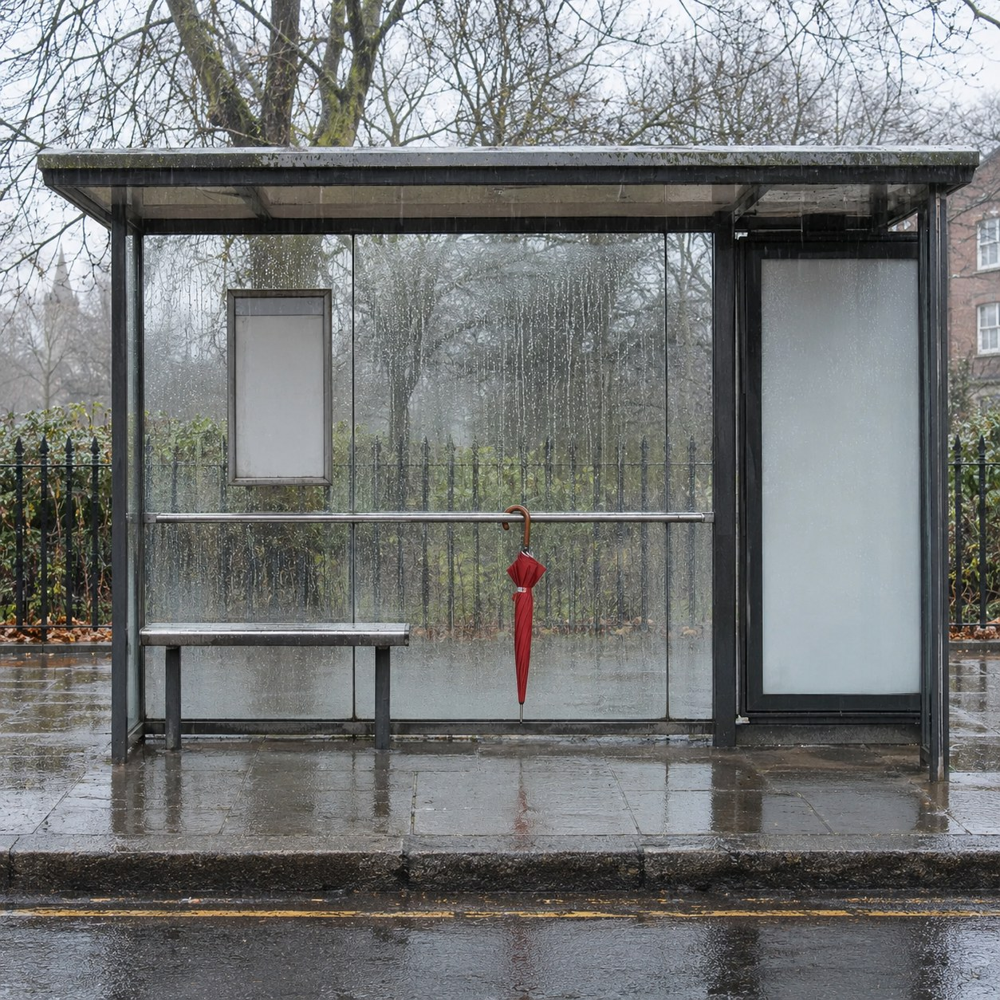
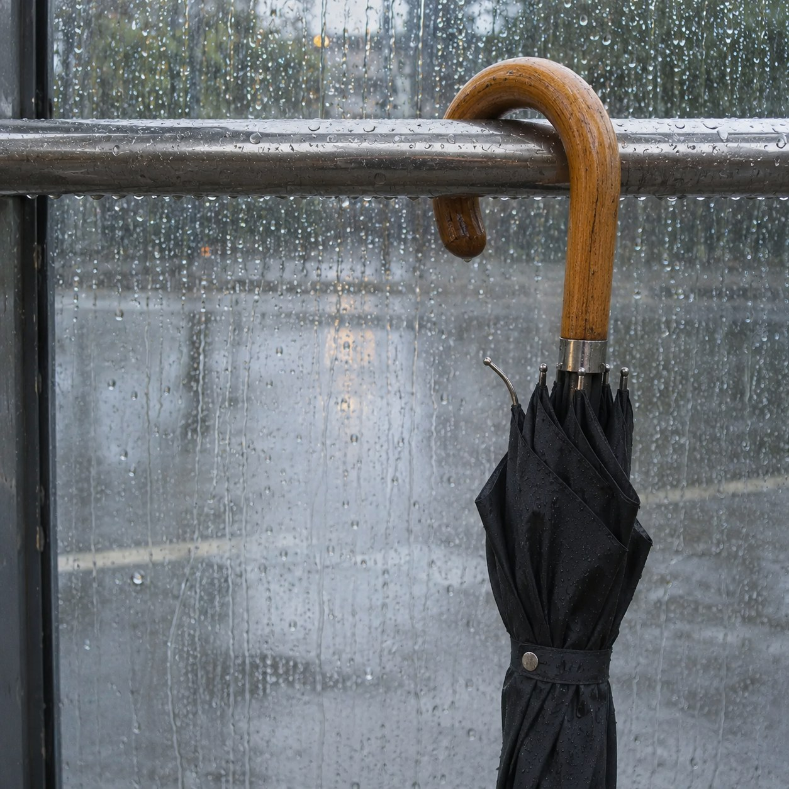

The Shelter's Umbrella


Last November I hung a red umbrella on the rail of the bus shelter at the end of my street. No note, no sign. It was not lost and it was not for sale. It was just there.
The first wet morning it was gone. Three days later it was back on the rail, dry, closed and neatly fastened. Someone had taken it home, kept it until the weather turned, and carried it back to a shelter they might never need again.
Through that winter it went and came back thirty-one times. I never saw who took it, and I did not try to. I only looked at the rail each morning on my way past.
Marcel Mauss, writing about the gift in 1925, argued that no present is ever free. To receive is to owe, and the debt ties the one who gives to the one who takes. Here the debt was paid every time, and paid to no one. Nobody brought the umbrella back to me. They brought it back to the rail.
In February the red umbrella did not come back. For a week the rail was empty. Then a black one hung there, plain, one rib a little bent. Someone had lost mine, I suppose, and felt they owed the shelter one.
Cildo Meireles printed questions on returnable glass bottles and put them back into circulation, so that the system already moving them did the delivering. I put nothing into a system. A small one grew up around a single umbrella, and outlasted it.
By spring the umbrella on the rail was the fourth. I have no claim on it. When it rains I walk past it, get wet, and leave it for whoever is waiting.